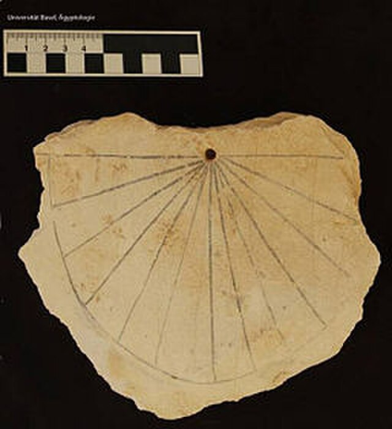

From Cosmic Models to Calendars
From the ancient sky gods of Egypt and Babylon to atomic clocks, humanity has sought to translate the heavens into order and time.
| Era | Discovery | Impact |
|---|---|---|
| Babylonian | Lunar Calendar | Planned agricultural cycles |
| Egyptian | Sirius Rising | Predicted Nile floods |
| Chinese | Solar-Lunar Calendar | Linked time to imperial order |
| Modern | Atomic Clock | Precision, technology, and global synchronization |
Today’s atomic clocks still echo the rhythm of the cosmos — a reminder that our measurement of time began with the stars.